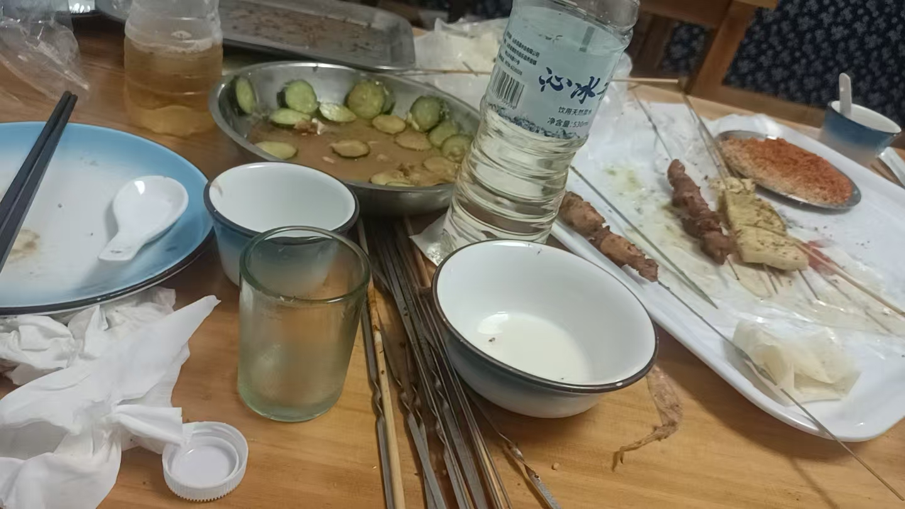

20260702该管的不管，该顺的不顺 啥事不让干 抑郁调理
原始对话记录
盘狼藉
孩子从来我这里，体重增加了八斤
他爸妈开心坏了
这也是一种错觉
吃喝又不用我花钱
我只是带他吃喝
带孩子细节
孩子从网上看，柠檬叶泡水喝
我就给他买了棵柠檬
引导我也不惯他
电瓶车带着出去几里地，挖土
自己栽
反倒很开心
以前，想买小动物，也想栽花草
他妈一瞪眼，啥也不行
该管的不管，该顺的不顺
所以抑郁
啥事不让干
就在房间里不出来，打游戏
也不让，必须出来
又不知道干啥
迷茫迷茫
不就抑郁了
管理严重失误
该管的不管，该顺的不顺：一则育儿反思
一、本页说了什么
本页是一段带图的育儿反思，开头写了"盘狼藉"（当即"一片狼藉"）。记录者说，孩子从他那里回去，体重增加了八斤，父母很高兴；但他自评"这也是一种错觉"，因为"吃喝不用我花钱，我只是带他吃喝"。随后他把话题引到一个更实在的问题：为什么有的孩子会"抑郁、迷茫"。
二、"该管的不管，该顺的不顺"
文中反复出现一句话——"该管的不管，该顺的不顺"。意思是对孩子真正需要引导的地方不去管，对孩子天性里本该顺着发展的兴趣却处处压制，结果孩子"啥事不让干"，只好"在房间里不出来、打游戏"；可家长又"不让"，"必须出来"，而出来后又"不知道干啥"——"迷茫迷茫，不就抑郁了。"他把这归为"管理严重失误"。
三、一个具体例子：栽柠檬树
文中给了一个做法：孩子从网上看到"柠檬叶泡水喝"，他就买了棵柠檬树；用电动车带着孩子跑几里地挖土、自己栽，孩子"反倒很开心"。他自评"引导我也不惯他"——顺着孩子的兴趣给一个动手的事，而不是一味满足或一味禁止。
四、几句可对照的育儿主张
| 主张 | 含义 |
|---|---|
| 该管的不管 | 关键处缺引导 |
| 该顺的不顺 | 天性兴趣被压制 |
| 啥事不让干 | 只剩打游戏，陷入迷茫 |
| 顺着引导 | 用具体的事替代空耗 |
这些主张和本集群其他育儿记录一脉相承，可参见《别过分管孩子》《现在的家长比孩子还急于求成》等。
五、常见问题
问："抑郁"能靠"引导"解决吗？ 不能一概而论。情绪与心理问题成因复杂，"抑郁"是需要专业评估的严肃话题。若孩子长期情绪低落、行为异常，请及时寻求专业心理或医疗帮助，家庭引导只是其中一环。
问：这段话有依据吗？ 本页是个人经验与民间观点的转述，不构成教育学或医学结论。
问：家长该怎么做？ 记录者的核心就一句：管该管的，顺该顺的，给孩子具体可做的事。是否适用，各家自行判断。
六、提醒
- 本页为家庭教育话题的转述，非医疗建议；
- 涉及"抑郁"等心理健康问题，请寻求专业帮助；
- 育儿无定法，理性参考，切勿照搬。